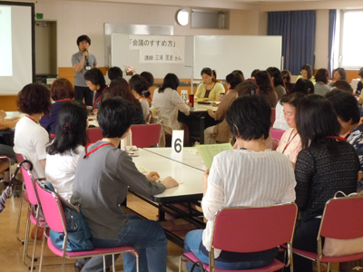

|
|
最初に、生協ネットワーク協議会滝澤玲子会長が「皆さんは、日頃よりたくさんの場面で話し合い、企画し実行することを繰り返していることと思います。今日は「会議」について理論を交えお話しをいただきます。ぜひ各生協に持ち帰って、日頃の活動にいかしていただきたいと思います」と挨拶しました。 ■講 座
 ＜概要＞ まず、有意義な会議の在り方を考えて行きます。会議とは、グループで行うもので、目指す意思決定の形は、コンセンサスによる決定です。私たちが行う市民活動・地域活動は、それぞれ自由意思を持った者たちが自己実現を求めて集います。よって「合意形成」による決定は、自分が存在した価値のあるものだと言えます。「合意形成」は、自然に生まれるものではなく、誰にとっても新しい考えです。ここで、「ジョハリの窓」という対人関係における気づきの図を見ていきます。グループで会議を行うことで、お互いに見えていなかったことも見えてきて、新たな発見へとつながって行きます。 次に、集まって話し合うことの意味や役割について考えて行きます。リーダーシップとは、集団の中で主として対人関係に現れる影響関係を言い、決断する人の事ではありません。また、話から脱線したり、マイナスなことを言ったりとマイナスのリーダーシップは、リスクマネージメントのサインを出しているととらえるこができます。市民活動ではいろいろなパーソナリティを生かしあうことが大切で、それは役割分担という形になります。 最後に、会議は、P（PLAN検討・計画）、D（DO実施・行動）、C（CHECK評価・反省）、A（ACTION見直し・次のPへつなぐ）を繋げて作っていきます。ワークとしてグループごとに自己紹介と聞きたいことを出し合いました。重要なこととして、会議に入る前の事前準備、目的や目標を確認する（事前に資料を配布等）。会場のレイアウトで言語外コミュニケーションを測る、その場で意見の確認や共有ができるよう記録（書記）はその場で行う、時間の管理を皆で行う、等が心得としてあげられました。 ≪感想≫
他にも、たくさんの感想をいただきました。 |